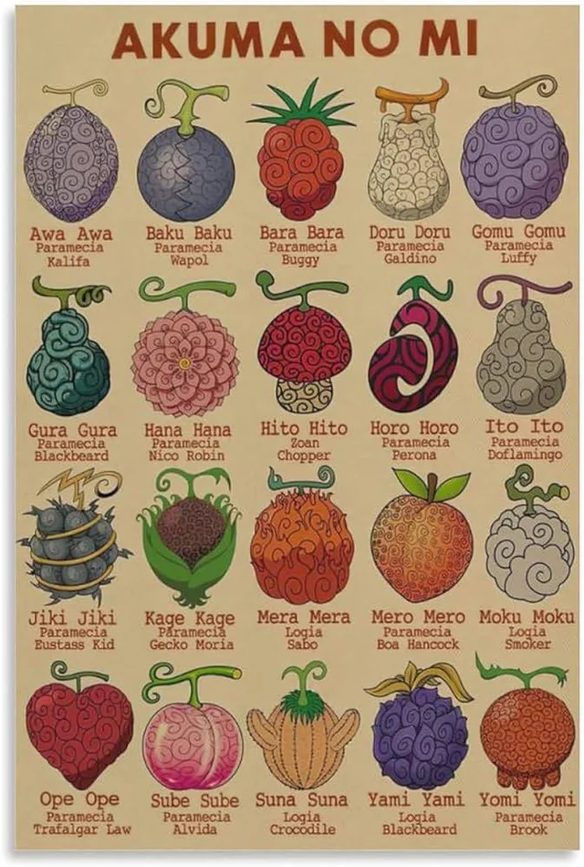

Tipos de Akumas no mi em One piece
- Paramecia
- Logia
- Zoan
No universo de One Piece, as Akuma no Mi (Frutas do Diabo) concedem poderes extraordinários aos seus usuários, sendo classificadas em três categorias principais: Paramecia, Logia e Zoan. Cada tipo possui características únicas e impacta o estilo de combate de quem a consome. A imagem apresenta uma seleção dos três principais usuários de cada tipo, destacando figuras icônicas como Barba Branca, Borsalino Kizaru e Marco, o Fênix. Esses personagens são reconhecidos por dominarem suas habilidades com maestria e por exercerem grande influência nas batalhas mais marcantes da série.
Luffy desperta sua fruta, revelando o poder do Hito Hito no Mi: Modelo Nika, que transforma sua luta em algo quase cartunesco e extremamente poderoso. Esse despertar representa a liberdade máxima em combate.
Kaido, portador da Uo Uo no Mi, modelo Seiryu (um Zoan Mítico), mostra um poder imenso com sua transformação em dragão. Apesar de não confirmado, acredita-se que seu domínio represente o despertar da fruta.